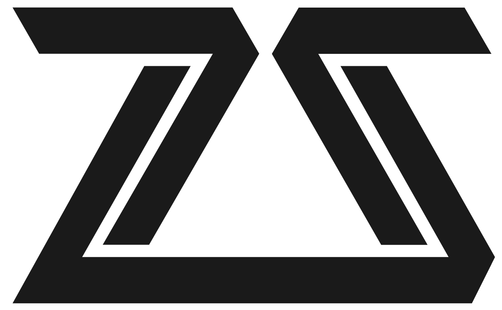

- Web: minimal, brutalist, type-heavy websites with smooth micro-interactions and purposeful motion.
- Motion & Video: AI-assisted visuals, editing, and compositing.
- Graphics & Layout: grid systems, SVG and canvas experiments.
- Music & Sound: composing, arranging, and sound design.

A clean foundation for a retro–neo brutalist experiment: bold typography, a dark aesthetic, and unapologetic contrasts. This site is the starting point of a personal portfolio that blends design, code, and storytelling. Soon (or late) it will evolve into something more kinetic—where visuals move, interactions surprise, and every detail feels alive.
I’m a creative developer working at the intersection of code, design, and storytelling. My work blends retro aesthetics with modern web tech—minimal layouts, brutalist edges, and typographic rhythm—so that interaction, motion, and copy read like a narrative.
I’m a husband and a father. When I’m not coding, I’m usually fixing or making something— tuning an old Volvo XC70, building home/garden projects, or crafting practical solutions in the woods.
About this Site
No frameworks. No libraries.
Just HTML, CSS, and a little bit of Vanilla JS. This project is intentionally stripped down to the basics— pure, performant, and unopinionated. It’s built like it’s 1999, when the web was still raw and personal. And yet, it’s styled like it’s 2099, with a futuristic edge that leans into retro–neo brutalism and kinetic typography.
This site is my digital playground: a place to present who I am, the projects I’ve worked on, and the ideas I want to share. At its core, it’s a portfolio—a simple stage where I can collect and showcase design, code, video, and experiments. But it’s also a lab, where I test new approaches to interaction and aesthetics, exploring how minimal tools can produce maximal impact.
Over time, it will grow into more than just a portfolio. A blog section will join in, giving space for longer thoughts—about technology, art, music, and the messy process of creating. This site isn’t meant to be static; it’s meant to expand, shift, and evolve—like the work it represents.
Sources for this site is here: github.com/egemensoylu/portfolio-site
Hiç - Nothing
A spoken-word piece blending poetic rhythm and minimalist flow, layered over an abstract audiovisual landscape. Written, performed, and visualized by me
This is a hybrid piece — part spoken word, part motion design. The text flows over a rhythmic, ambient soundscape, carrying elements of poetry and rap, yet belonging fully to neither. Every word is written, voiced, and visually composed by me. It's not a music video, not a poem, not a lyric — but something in between. Headphones? Nice, but your laptop speakers will probably survive too.
Mesaj - Message
This is my very first experiment with AI-generated visuals — both still and moving. A summer-scented, golden-toned music video for "Mesaj" by Duygu Soylu — who also happens to be my sister :) From concept to execution, everything you see is AI-crafted, directed, and assembled by me. It’s a dreamy, shimmering landscape where music meets machine imagination. Not a traditional music video, not fully animation — something in between.
The visuals are generated, but the emotion is real. AI doesn’t feel the sun. But this song made it dream of summer anyway.
Tek Yol Müzik - One Way > Music
A short kinetic typography video I made over 12 years ago for the intro of the rap track Tek Yol Müzik. The song is fire—rap fans should definitely check it out.
Made as a shout-out to Kamufle and Red, experimenting with gravity-like effects in After Effects without using Newton.